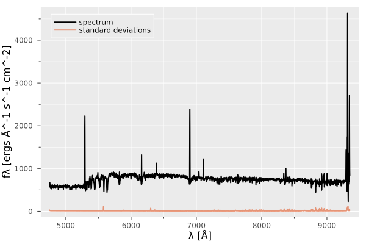
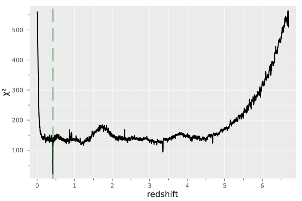

Basic usage of Moose.jl
This example illustrates the basic usage of Moose.jl: loading a galaxy spectrum from a FITS file, constructing the wavelength–redshift grid and spectral basis explicitly, performing redshift inference, and visualizing the results.
Imports
We begin by importing Moose.jl along with a few auxiliary packages used for data handling and visualization.
using Moose, FITSIO, Plots
Wavelength–redshift grid and basis
The first step is to construct a Γgrid struct, which defines the rest-frame log-wavelength grid and the grid of trial redshifts used during inference. Two keyword arguments are particularly important for creating this instance:
λmin: the blue-end of the observed-frame wavelength range (in Å),δζ: the spacing of the trial redshifts grid.
wgrid = Γgrid(; λmin = 4700f0, δζ = 5f-4);Next, we create an instance of the Basis struct, which provides a low-rank internal representation of galaxy spectra. This object stores wavelength-sliced versions of the basis matrix H, corresponding to the trial redshifts defined in the associated Γgrid instance. Furthermore, it precomputes and stores the Gram matrix (HᵀH) for each slice in order to avoid re-computations during redshift inference.
When constructing a Basis instance, the user may choose the rank of the representation (rank ∈ [6, 14]). For optimal redshift inference performance, we recommend setting the rank to 10.
basis = Basis(wgrid; rank = 10);Loading and visualizing the spectrum
We load an example spectrum from a FITS file. The file contains the flux density vector (in the "DATA" HDU) and the corresponding variance (in the "STAT" HDU), from which we derive the standard deviation vector.
hdul = FITS("../../../data/spectra_sample/udf10_00002.fits", "r")
f = read(hdul["DATA"])
σ = read(hdul["STAT"]) |> (x -> sqrt.(x))
λref = read_header(hdul["DATA"])["CRVAL1"]
N = read_header(hdul["DATA"])["NAXIS1"]
δλ = read_header(hdul["DATA"])["CDELT1"]
λ = collect(Float32, λref .+ (0:N-1) .* δλ)
close(hdul)Take a look at the spectrum and its associated uncertainties.
p = plot(λ, f, lw =2 , xlabel ="λ [Å]", ylabel ="fλ [ergs Å^-1 s^-1 cm^-2]",color="black", label ="spectrum",)
plot!(p, λ, σ, lw =2 , alpha = 0.7, label = "standard deviations")
The plot above displays an emission-line galaxy spectrum at redshift 0.4193. Usually, raw data comes with NaN and Inf values. To avoid errors related to these values, let us clean the flux densities and standard deviations. We assign zeros for NaNs in fluxes, and a high number for NaNs and Infs in standard deviations.
replace!(f, NaN => 0)
replace!(σ, NaN => 1f6, Inf => 1f6)
σ[f .== 0] .= 1f60-element view(::Vector{Float32}, Int64[]) with eltype Float32Redshift inference
We interpolate the flux densities and standard deviations to the rest-frame grid using the interpolate() function.
fʳ, σʳ = interpolate(basis, f, σ , λ);The function interpolate() interpolates the products f × λ and σ × λ to the rest-frame log-wavelegths grid
Run a threaded FNNLS to test all possible redshifts using the flow() function. For each trial redshift in wgrid.ζ, the flow() function projects the spectrum into the basis slice (corresponding to this trial redshift). The projection is carried out using a fast non-negative least squares follwed by a χ² error evaluation between input and reconstruction. The flow() function outputs a χ² vector represeting error for each trial redshift.
χ² = flow(basis, fʳ, σʳ);The flow() function returns the χ² vector (error for each trial redshift). We can now plot the obtained χ² curve.
p = plot(wgrid.ζ, χ², xlabel = "redshift", ylabel= "χ²")
The χ² curve displays a minimum at the true redshift (vertical green dashed line), Hence successfully predicting the correct redshift. Moose.jl implements a significance and a robustness score to assess the confidence of the redshift prediction, see this paper for further details. The significance score can be computed by calling the Δχ²() function.
Δχ²(χ²)0.8462723091811408similarly, the robustness score is computed by calling the R() function.
R(χ²)12.729961f0The values of these scores indicated a significant and robust minimum in the χ² curve.
This page was generated using Literate.jl.